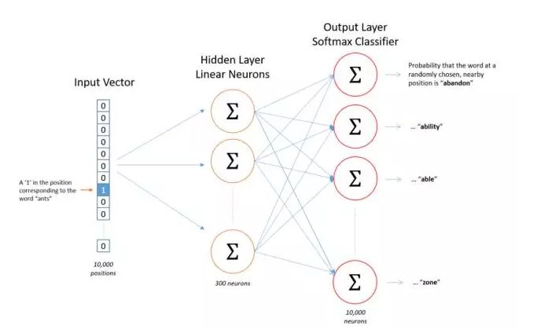
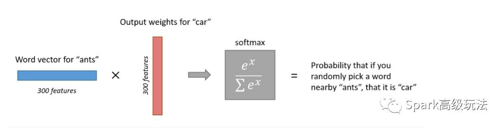
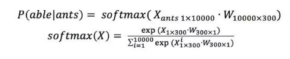
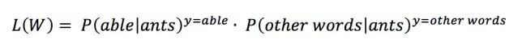
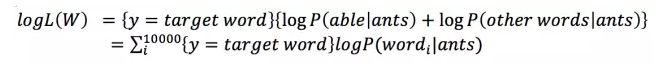
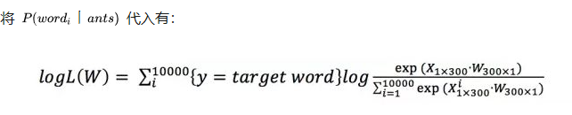
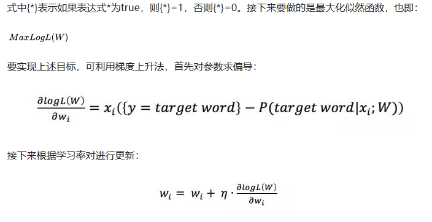
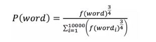
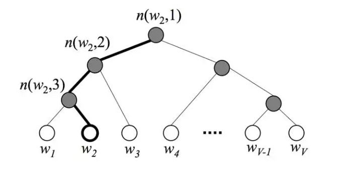
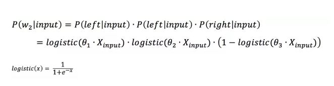

【NLP】Skip-gram

上图的Skip-gram的结构图
我们的目标是利用最左边的输入词向量(图里为shape=(100001))来训练隐藏层
隐藏层的结果是shape=(10000300)的矩阵。也就是词向量
于是$W_1$是大小为$(1,300)$的矩阵
如果我们一次输入多个词向量那就是
输入$(10000,n)大小,W_1’s\quad size=(n,300)$
中间层是线性的。不用激活函数，
于是经过$W_2$（也是词向量）到输出层得到结果。输出层结果为(10000,1)的大小。经过softmax后就得到分类概率

分析
假设输入的word pair为$（ants, able）$，则模型拟合的目标是 $Max P(able|ants)$ ,同时也需要满足 $Min P (other words 丨ants) $，这里利用的是对数似然函数作为目标函数。上述表述中$ P（able 丨ants）$ 可表示为：

根据$ P（able丨ants）$ 和 $P(other words丨ants) $，可构建似然函数:

对数化



模型优化
负采样 negative sample
负采样是加快训练速度的一种方法，这里的负可以理解为负样本。针对训练样本（ants, able），able这个词是正样本，词表中除able外的所有词都是负样本。负采样是对负样本进行采样，不进行负采样时，对每一个训练样本模型需要拟合一个正样本和九千九百九十九个负样本。加入负采样后，只需要从这九千九百九十九个负样本中挑出来几个进行拟合，大大节省了计算资源。那么应该挑几个负样本，根据什么进行挑呢？Google给出的建议是挑5-20个，怎么挑是根据词在语料中出现的概率，概率越大越有可能被选中，具体计算公式为：

其中f()表示出现的概率。
层次softmax
层次softmax的目的和负采样一样，也是为了加快训练速度，但它相对复杂，没有负采样这种来的简单粗暴。具体来说，使用层次softmax时图4中的模型输出层不再是使用one-hot加softmax回归，而是使用Huffman树加softmax回归。在模型训练的时候首先统计语料中词语的词频，然后根据词频来构建Huffman树，如图7所示，树的根节点可理解为输入词的词向量，叶子节点表示词表中的词，其它节点没有什么实际含义，仅起到辅助作用。

为什么使用Huffman树可以加快训练速度？答案是输出层不使用one-hot来表示，softmax回归就不需要对那么多0（也即负样本）进行拟合，仅仅只需要拟合输出值在Huffman树中的一条路径。假设词表大小为N，一条路径上节点的个数可以用来估计，就是说只需要拟合次，这给计算量带来了指数级的减少。此外，由于Huffman编码是不等长编码，频率越高的词越接近根节点，这也使计算量有所降低。
怎么对树中的节点进行拟合呢？如图7所示，假设训练样本的输出词是 w_{2} ，则从根节点走到 w_{2} 经过了 n(w_{2},2),n(w_{3},3) 这两个节点。由于Huffman树是二叉树，这意味着只需要判断向左还是向右就可以从根节点走到 w_{2} ，判断向左还是向右其实就是进行二分类。图7中的例子，“root(input)->left->left->right()”这条路径的概率可表示为：

其中 θ_{i} 表示路径中第i个节点的权值向量。注意一点，softmax regression 做二分类的时候就退化为了logistic regression，因此虽然叫层次softmax但公式中其实用的是logistic function。根据上述公式就可构建根据Huffman树来进行softmax回归的cost function，进而根据梯度下降对模型进行训练求解。